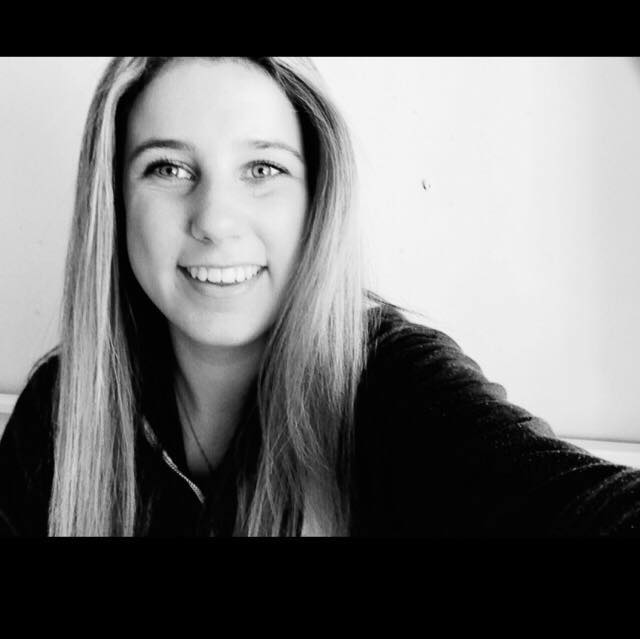
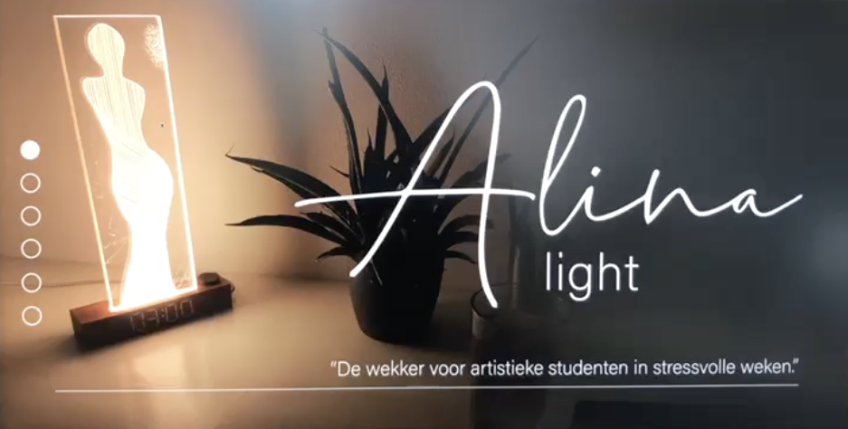
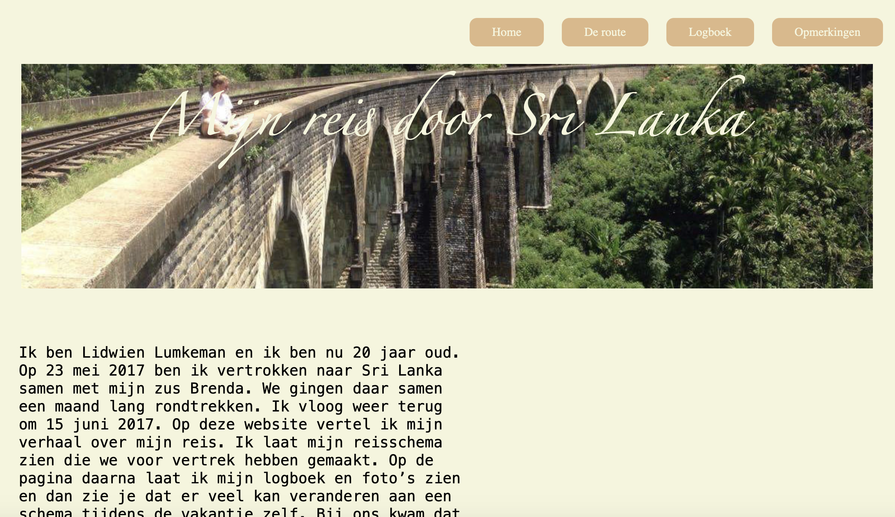
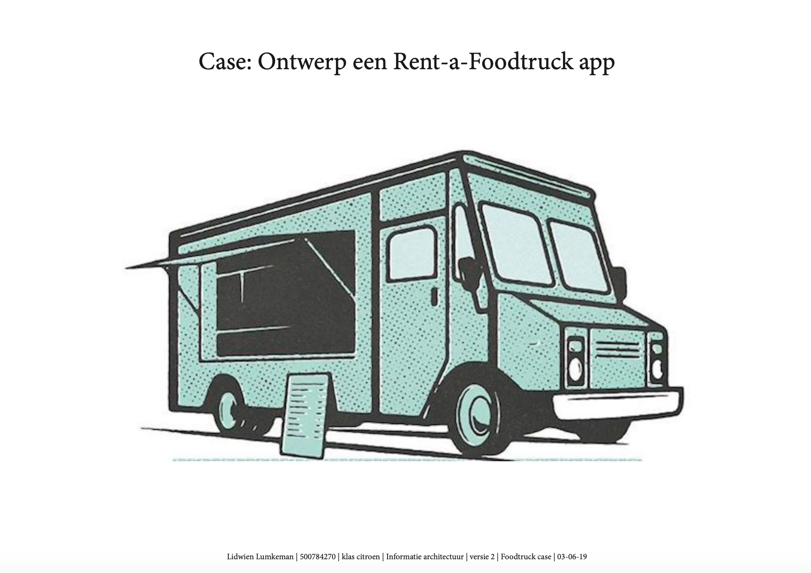
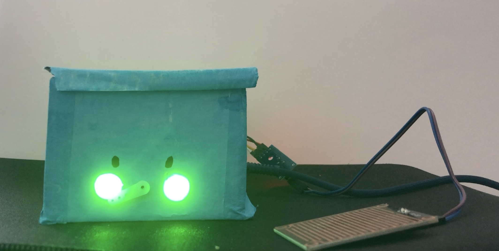

In dit portfolio ga je het werk zien van mij, Lidwien Lumkeman en hoe ver ik ben met mijn ontwikkeling in dit vakgebied. Ik ben een 2e jaars CMD student. Buiten de schoolwerken om heb ik ook een aan een andere opdracht gewerkt.

Alina light - project jaar 1

Dit was een project waar je met andere samen moest werken. De opdracht was: 'Ontwerp een product waarbij je de slaap van een bepaalde doelgroep verbeterd.' Ik heb in dit project veel vooruitgang gemaakt. We zijn met ons eindproduct de beste van de klas en als tweede van een deel van mijn hele jaar.
Website Sri Lanka - blok 1, jaar 1

Dit was de aller eerste opdracht dat we kregen van deze studie bij het vak internetstandaarden. We kregen gelijk de opdracht op een website te maken aan de hand van html en css. Dit was erg lastig omdat ik nog geen enkele ervaring had hiermee, echter was ik wel tevreden over het eindresultaat.
De foodtruck cas - blok 4, jaar 1

Dit was de laatste opdracht van het jaar en het was ook een erg moeilijke. Hier werden we veel meer los gelaten en kregen we minder richtlijnen. Dit was een uitdaging, maar ik vind het een leuk onderdeel van de studie. Door veel goede feedback en verbeteringen heb ik het goed afgelsoten. De opracht was om een app te maken waar een foodtruck zich kon aanbiedenen en waar je een foodtruck kon huren
Laat het niet natregenen! - blok 1, jaar 2

Toen ik aan dit vak begon wist ik niet zeker of ik het ging halen, het was er moeilijk en zeer technisch. Ik vond het echter wel heel leuk om te doen en om steeds nieuwe dingen te leren. Ik heb veel aandacht aan dit vak gegegeven. De opracht was om een 'probleem' binnen huis of werk op te lossen zodat het gedrag van de gebruiker verandert wordt zonder hun te straffen. Je werkte hier met sensoren en coderen.